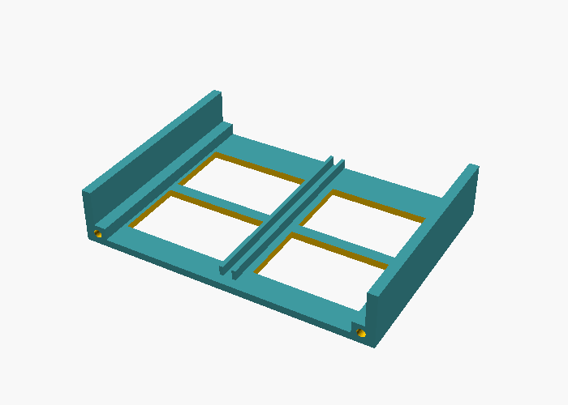
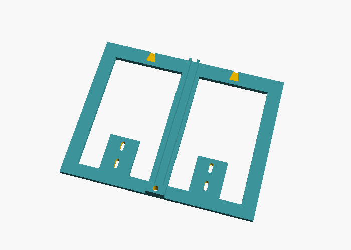
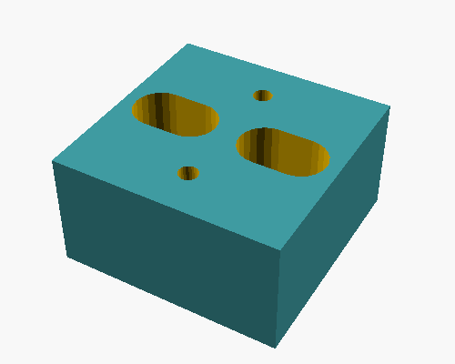

Printing
The generator's zip contains every part as an STL, already oriented for printing and split to fit your bed. File names carry the quantity: 09-bracket-x4.stl means print four. Printing on a Bambu Lab printer? The zip also holds a ready-to-print project.
Bambu Studio and OrcaSlicer
Pick your printer next to the download buttons, then download Bambu Studio project (.3mf) (it's in the zip too). Open it and everything is set up:
- Plate 1 is the test piece: one base piece on its own. Print it and test-fit it before the rest.
- Every other part is laid out on plates, grouped by part, with copies already made. Plate names say what's on them: Front plate 2 of 3, Brackets and keys ×14.
- Walls and infill are set per part (5 walls on parts that hold screws, 4 elsewhere, 25% gyroid), so they survive a change of process preset.
- Parts stay clear of the front-left calibration corner on P1 and X1 printers.
The project starts on Bambu's own 0.20mm Standard process and Generic PETG. Pick your actual filament (or let the AMS sync it) before slicing. If your printer model isn't in the list, pick the closest and switch printers in Studio: the plates and per-part settings carry over.
With fixed shelves you get one project per tier (…-tier1.3mf, …-tier2.3mf), each with exactly the parts that tier needs, so you can print and fit one tier at a time. The test piece is on plate 1 of the first. Bambu Studio holds at most 36 plates per project, so a tier that needs more comes as two files.
Other slicers: use the STLs. Settings are in the table below.
Material and settings
PETG or PETG-GF. Under-sink cabinets get warm and humid, and the parts carry weight for years. PLA creeps under steady load, so avoid it for the base and plates.
| Setting | Value |
|---|---|
| Layer height | 0.2 mm |
| Walls | 4 (5 for the base and printed rails, which hold screws) |
| Infill | 25% gyroid |
| Supports | None needed |
| Brim | Optional on the long base and rail pieces if your bed is fussy |
Everything is oriented for you: plates print face-down, top rails print cap-down, brackets print door-side-down, bar and arch handles print on their side, knobs print face-down. Don't rotate them.
What you'll print

| Part | What it does |
|---|---|
| Base (usually 3 pieces) | The tray the slides screw to. Grooves hold the bottom of the boards; beads along each side carry the tie rods |
| Front plate (3 pieces) | Carries the door brackets. An open frame in door-mount mode; a solid face with your choice of handles if you keep the door hinged or have none |
| Rear plate (3 pieces) | Open frame with grooves for the back of the boards |
| Top rail (3 pieces per panel) | Caps the boards and ties the plates together at the top |
| Door bracket (4 per door) | Door-mount mode only |
| Handles or knobs | Only if you picked printed ones. Screw on from inside the front plate |
| Bowtie keys | Glue into the plate seams |
| Floor rails | Only if you chose printed rails |


openGrid boards
PullGrid doesn't print the panels itself: you print standard openGrid boards from openGrid's own files, so every openGrid snap and accessory fits exactly. The generator's openGrid boards list gives the sizes in cells (wide × tall) and how many of each.
- Use Full boards: they're 6.8 mm thick and usable from both sides.
- Lite boards (4 mm) work if you set Board type to Lite, but only one side takes accessories.
- You'll also need openGrid's connector pegs for the seams between boards.
Test print first
PullGrid is in beta, so before printing about a kilo of plastic:
- Print
base_1only. - Hold a slide against the cheek. The inner member should sit flat, and its holes should land on solid plastic. Drive one screw and check it holds.
- Push an openGrid board into the groove. It should slide in with light friction, not rattle and not jam.
- Push your threaded rod through the bead. It should pass freely.
If the board is too tight or loose, your printer runs a little over or under size. Adjust your slicer's XY compensation, or open an issue with what you found: that's exactly the feedback the project needs right now.
How much plastic
The generator's Print line estimates the total. For a typical 11″ × 24″ × 22″ cabinet with a mounted door it's roughly 1 kg of PETG. Printed rails add about a fifth more.